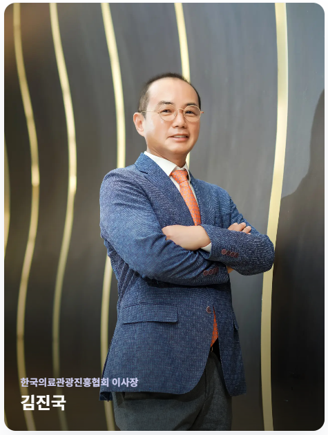
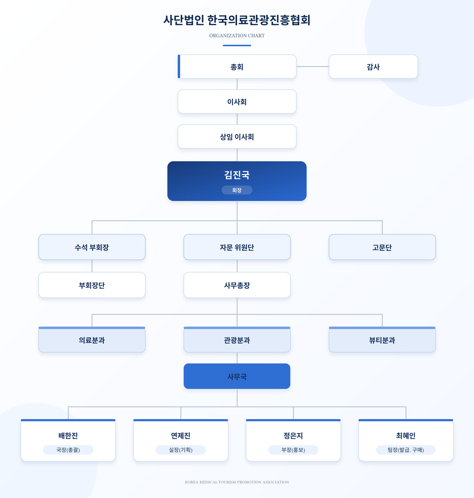

Beyond Korea,
Toward the World.
The Premier Global Partner for Trusted K-Medical Tourism
대한민국을 넘어 세계가 신뢰하는 글로벌 K-의료관광 NO.1 파트너로, 한국 의료가 국제 환자가 가장 먼저 떠올리는 신뢰의 이름이 되도록 합니다.


대한민국은 이제 첨단 의료기술의 시대를 넘어 한류 문화, 관광, 웰니스가 유기적으로 결합된 'K-메디(K-Medi)'라는 보이지 않았던 새로운 가치를 창출하며 전 세계의 주목을 받고 있습니다.
진정한 혁신은 눈에 보이는 현상을 넘어, 그 이면에 숨겨진 새로운 가능성을 발견하는 데서 시작됩니다. 우리 협회는 문화체육관광부 산하 공익법인이자 대한민국의 선진 의료 기술과 사람을 구심점으로 활동하는 국제 비영리 단체(INGO)로서, 의사 중심의 전문성과 견고한 회원사 네트워크를 결합해 한국 의료관광의 미래를 설계하는 'Art of Vision'을 실천하고자 합니다.
첫째, 융합을 통한 차별화된 가치 창출입니다. 단순한 치료를 넘어, 환자들이 한국의 수준 높은 의료와 매력적인 문화를 동시에 경험하며 삶의 새로운 에너지를 발견할 수 있는 독보적인 의료관광 모델을 구축하겠습니다.
둘째, 상생을 통한 지속가능한 생태계 조성입니다. 투명한 거버넌스와 신뢰 있는 책무성을 바탕으로 200여 회원사가 함께 성장하는 네트워크를 형성하겠습니다. 이를 통해 외부 환경의 변화에도 흔들리지 않는 탄력적이고 회복력 있는 산업 생태계를 구현하겠습니다.
우리 협회는 K-메디의 세계화를 선도하는 플랫폼이 되어, 대한민국이 글로벌 의료관광 허브로 확고히 자리매김할 수 있도록 모든 역량을 집중할 것입니다. 보이지 않는 가치를 찾아내어 한국 의료관광의 더 큰 미래를 그려가는 여정에, 뜻을 함께하는 여러분의 따뜻한 관심과 적극적인 동참을 기대합니다.
The Premier Global Partner for Trusted K-Medical Tourism
대한민국을 넘어 세계가 신뢰하는 글로벌 K-의료관광 NO.1 파트너로, 한국 의료가 국제 환자가 가장 먼저 떠올리는 신뢰의 이름이 되도록 합니다.
Transparency · Public Interest · Sustainable Growth
의료관광의 투명성 제고와 공익적 가치 확산을 통해 인류의 건강 증진과 국가 경제 발전에 기여한다.
신뢰 · 상생 · 혁신 · 공익 — 모든 활동의 기준이 되는 협회의 약속입니다.
"투명한 운영과 전문성으로 쌓아가는 흔들리지 않는 믿음"
우리는 의료관광 산업의 투명성을 제고하고, 국제적인 신뢰를 확보하는 것을 최우선 과제로 삼습니다. 전문 의료 지식과 엄격한 윤리 의식을 바탕으로 국내외 이해관계자 모두가 안심하고 선택할 수 있는 대한민국 의료관광의 표준을 정립해 나갑니다.
"의료와 문화를 잇고, 파트너와 함께 성장하는 동반자 정신"
의료기관, 뷰티·관광 기업, 그리고 정부 부처를 하나로 연결하는 강력한 네트워크 허브로서, 상호 보완적인 시너지를 창출합니다. 모든 회원사와 파트너가 함께 성장하며 혜택을 나누는 건강한 비즈니스 생태계를 조성하여 의료관광의 동반 성장을 견인합니다.
"보이지 않는 가능성을 발견하는 의료관광의 새로운 미래 설계"
'New vision is the art of seeing the unseen'이라는 철학 아래, 기존의 틀을 깨는 창의적인 접근으로 K-메디컬의 새로운 비전을 제시합니다. 첨단 의료 기술과 한류 콘텐츠를 유기적으로 융합하여 전 세계가 주목하는 혁신적인 의료관광 모델을 선도합니다.
"지구촌 사회의 건강 증진과 지속가능한 가치 확산"
우리는 단순한 산업 진흥을 넘어, 국내외 취약계층을 위한 의료복지 지원 등 사회적 책무를 다하는 국제 NGO이자 공익법인으로서 행동합니다. 국가 경제 발전과 더불어 인류 전체의 보건복지 향상에 기여함으로써 지속가능한 공익적 가치를 실현합니다.
총회와 이사회 아래 회장이 협회를 대표하고, 사무총장이 일상 운영을 총괄합니다. 의료·관광·뷰티 3개 분과와 사무국이 분야별 사업을 책임집니다.

도표를 누르면 원본 크기로 열립니다